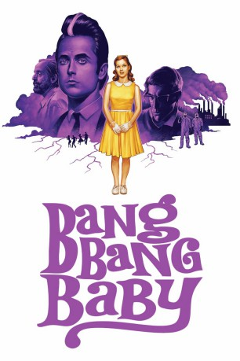

#11847 Bang Bang Baby
 
 IMDB-Wertung: 5.0 / 10
IMDB-Wertung: 5.0 / 10  Tomatometer: 67
Tomatometer: 67  Metascore: 0
Metascore: 0 
Stepphy lebt in einer gemütlichen Kleinstadt in Kanada Anfang der 1960er Jahre. Dort lebt sie bei ihrem alkoholsüchtigen Vater mit dem Traum, eines Tages als Sängerin ganz groß rauszukommen. Doch bisher wurden ihr vom Leben nur Steine in den Weg nach oben gelegt. Eines Tages jedoch bekommt das Örtchen ganz unverhofften hohen Besuch: Der Rockstar und Stepphys großes Idol Bobby Shore taucht auf und muss sogar unfreiwillig länger bleiben, als er eigentlich vorhatte. Auf einmal sieht Stepphy ihre Chance auf Ruhm gekommen. Aber erneut macht ihr das Schicksal einen Strich durch die Rechnung, als es in der nahe gelegenen Chemiefabrik zu einem Unfall kommt. Nur wenig später kommt es zu allerlei seltsamen Mutationen bei den Einwohnern und auch Stepphy scheint davon betroffen zu sein…
kontrollieren, ob noch x265 Version auf Platte bei 2014 liegt
Jahr: 2014
Dauer: 89 Minuten
FSK: 12
Land: Kanada Studio: Lighthouse Home EntertainmentTonspuren: DTS-HD - ,
Untertitel:
Auflösung: 1080p (1920x1080) Größe: 15360 MB
Genre: Drama, Sci-Fi, Fantasy, Liebe, Musical
Regisseur: Jeffrey St. Jules
Drehbuch: Jeffrey St. Jules
Soundtrack: Darren Fung, Richard Pell, David Wall
Darsteller:
 Jane Levy als Stepphy Holliday
Jane Levy als Stepphy Holliday- Justin Chatwin als Bobby Shore
 David Reale als Fabian
David Reale als Fabian Peter Stormare als George Holliday
Peter Stormare als George Holliday Kristian Bruun als Helmut
Kristian Bruun als Helmut- Boyd Banks als Gord
- Stephen Joffe als Bennett
- Sidney Leeder als Eleanor
- Seán Cullen als Jack Avery
- Jen Goodhue als Joan
- Christian Lloyd als Host / Radio Guy / White Suit Man / American Ingenue Reader
- Cameron Bryson als White Suit Man
 Ian Matthews als Beatnik Poet
Ian Matthews als Beatnik Poet- Chloe Rose als Fifi
- Michel Issa Rubio als Dancer #1
- Gemma James Smith als Baby
- Terrence Bryant als Priest
- Dylan Bryson als White Suit Man
- Craig Snoyer als White Suit Man
- Madeleine Bisson als Debbie
- Joe Perez als Dancer #2
- Rochelle LaBrecque als Dancer #3
- Martin Samuel als Dancer #4
- Kalie Hunter als Dancer #5
- Kevin Howe als Dancer #6
- Andrea Ciacci als Dancer #7
Datei: X:\NEU\Bang Bang Baby (2014, FSK12, 1920x1080).mkv seit 02.10.2019
 Es gibt insgesamt 187 Filme in der Gruppe 'NEU'
Es gibt insgesamt 187 Filme in der Gruppe 'NEU'